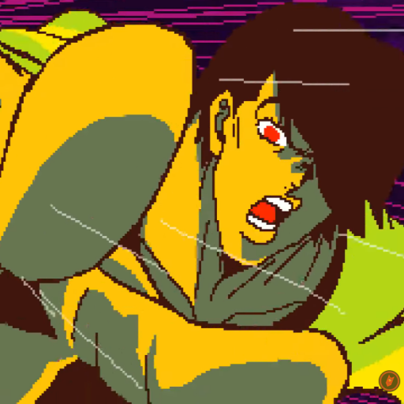

4040

Имя в Discord: 4040
Ник в Discord: thatonehungryscotsmanfrom2006
Позиция в семействе: -(Сообщество развалилось)
Discord ID: <@1361981502103097347>
Возраст: 19 лет(на момент 10.2025)
Национальность: Русский
Реальное имя: -
Местоимения: Он/Его(админ)
Также известен как:
- СорокСорок
- Скыдыщ
Отношения:
- byeyan_makes_wonders(администратор ШФ)
- Сын Святого Максона(администратор ШФ)
- dizzer0489_13460(первое существо, прибывшее во время его правления)
Это вообще кто?
4040(СорокСорок) - анонимный юзер, взошедший на трон Шайнинг Фура 30-го сентября 2025 года, а зарегистрировался аж 16-ого апреля 2025.
Несмотря на дату регистрации, сабж впервые родился того же числа, когда попал на ШФ. За то ему и дали роль
"Из грязи в князи", а потом добродушно посвятили в вышку.
На аватарке держит Криса вот из
этого ролика
По поведению немного похож на Баяна, однако это точно не он.
В отличии от Сына Святого Максона, 4040 не стремится забрать себе сервак.
Вы не поверите, но он, собственными силами, удосужился не только посидеть с ролью администратора, но ещё и провести серверную реформу по отношению к новорегам, создать
страницу регистрации(оно же startpage) и... Пока всё.
Как упоминалось ранее, 4040 - самый, что ни на есть, чародей!
Силой своей ему удалось убедить сервера Дискорда сменить дату регистрации аж на 5 месяцев назад, чтобы у крестьянского люда и особо любопытных можираторов было меньше подозрений на новорега.
Сабж совсем не наглый, чуть ли не добродушный.
Не имеет никаких кодерских способностей, но жить ему это совсем не мешает, а Баяну прям душу греет.
Сейчас надеется воскресить Шайнинг Фур, но немного неохотно.
В отличие от Баяна, хочет именно его воскресить, а не превратить в Бабиджон Хаб.
Когда он добавлял на сервер стартпэйдж, то добавил и новую роль, носители которой, с недавних пор, имеют доступ ко всем каналам Шайнинг Фура.
Стартпэйдж гласит:
ОБЯЗАТЕЛЬНО
Перед входом на сервер читайте 📕︙правила. Их мало, и это сводка лишь основных правил, необходимых для выживания в местном окружении.
Для других топиков существуют свои правила, которые могут идти вразрез с основной сводкой.
Поставьте реакцию, если вы ознакомились с 📕︙правилами
Создав стартовую страницу и настроив права у ролей, до него дошло, что надо бы выдать эту роль старожилам.
Первыми её получили, конечно же, мёртвые члены
TENOX Community, а после них - небольшая часть живых юзеров, попадших под владения местной вышки.
Остальным не дали ничего. Благородный Скыдыщ сдался, сказав...
@everyone жмите галочки сами, я устал вам роли выдавать
Кстати, правила эти были писаны с аккаунта Фырки, который украл их с нового Чайного Домика Киао Сан.
Несмотря на то, что их там немного, желание их читать отбивается моментально, стоит только посмотреть на то, насколько колхозно они представлены новоприбывшему юзверю.
{kind=link}